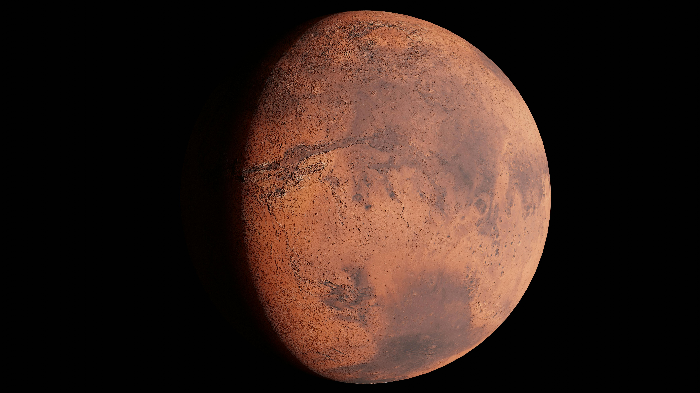
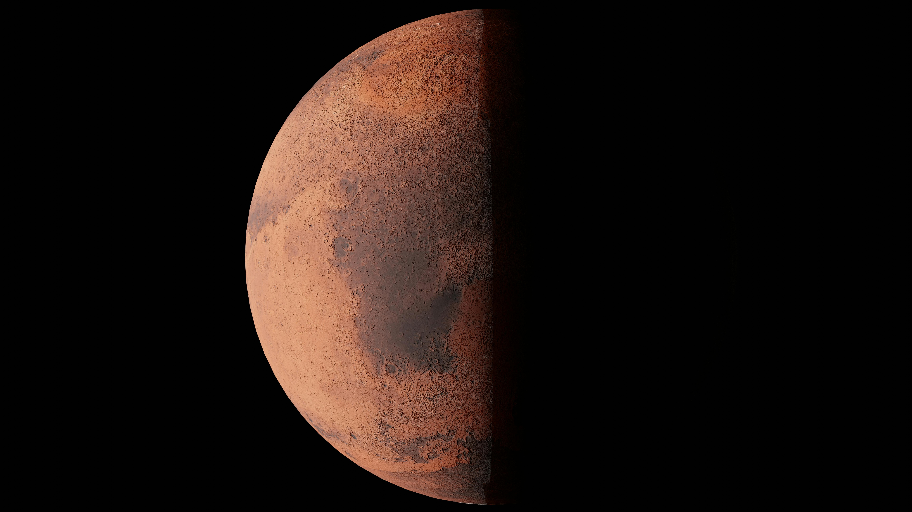
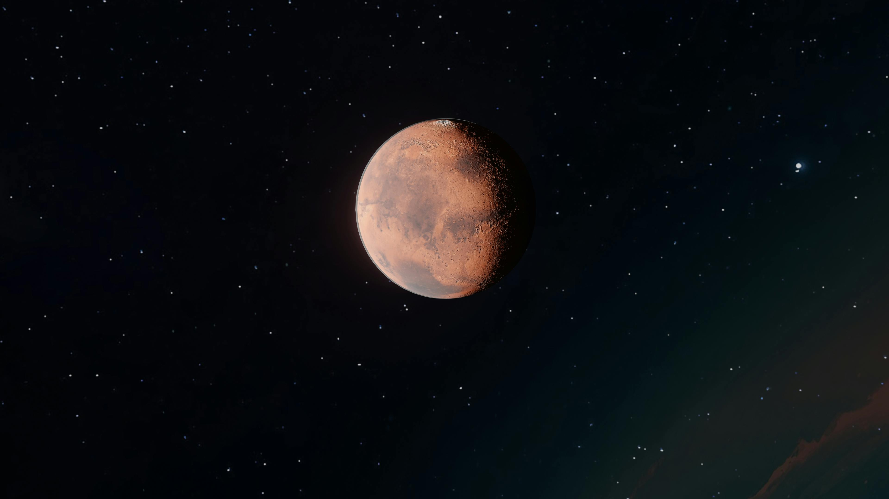

Mars
The most explored world beyond Earth, and the most likely destination for the first crewed mission to another planet.
Mars is the fourth planet from the Sun and the second smallest in the solar system. Its surface is coated in iron oxide, commonly known as rust, which gives the planet its characteristic red color visible even to the naked eye from Earth.
Despite being much smaller than Earth and possessing only a thin atmosphere of mostly carbon dioxide, Mars hosts the solar system's tallest volcano and its longest canyon. Geologically it is a world of extremes, its surface features preserved in remarkable detail by the absence of plate tectonics and the slow pace of erosion.
Evidence strongly suggests that liquid water once flowed across the Martian surface. Ancient riverbeds, lake basins, and minerals that only form in the presence of water all point to a warmer, wetter past when conditions may have supported microbial life.
Today Mars is the most visited body beyond Earth. Multiple orbiters, landers, and rovers are actively studying the planet, collecting data in preparation for eventual human missions that multiple agencies and private companies are working toward.




The largest volcano in the solar system stands approximately 21.9 kilometers above the surrounding plains and spans roughly 600 kilometers in diameter, an area comparable in size to France. It is a shield volcano with such a gradual slope that someone standing at its base could not see its summit due to the curvature of the planet.
A canyon system stretching over 4,000 kilometers in length, reaching depths of up to 7 kilometers and widths of over 200 kilometers in some places. If placed on Earth it would span the entire continental United States. It likely formed through a combination of tectonic rifting and erosion over billions of years.
Both poles of Mars have permanent ice caps. The northern cap is composed primarily of water ice, while the southern cap retains a layer of frozen carbon dioxide throughout the year. Seasonal frost extends these caps during winter and drives wind patterns and atmospheric pressure changes across the entire planet.
Mars experiences the most extreme dust storms in the solar system. Regional storms can expand to encircle the entire planet within weeks and persist for months. The 2018 global dust storm blocked enough sunlight to end the solar powered Opportunity rover's 15 year mission by preventing its batteries from recharging.
Mars has two small, irregularly shaped moons thought to be captured asteroids. Phobos orbits just 6,000 kilometers above the surface and completes one orbit in only 7.7 hours, meaning it rises in the west and sets in the east, moving opposite to every other body in the Martian sky.
Orbital imagery and rover data have confirmed ancient river deltas, lake beds, and hydrated minerals across the Martian surface. The Jezero Crater, currently being explored by the Perseverance rover, was once a lake fed by river systems. Whether life existed in these ancient water bodies remains an open question.
NASA's Mariner 4 became the first spacecraft to successfully fly past Mars and return close up imagery. The photographs revealed a heavily cratered, barren surface and confirmed an extremely thin atmosphere, significantly changing expectations about the planet.
NASA successfully landed two spacecraft on the Martian surface. The landers conducted biology experiments designed to detect signs of life in the soil. The results were ambiguous and remain debated, but no confirmed evidence of biology was found.
The Sojourner rover became the first wheeled vehicle to operate on Mars, exploring the landing site for 83 Martian days. The mission demonstrated that rover based surface exploration was practical and opened the door to the more capable rovers that followed.
NASA landed two rovers on opposite sides of Mars. Spirit operated for six years before becoming stuck. Opportunity exceeded its planned 90 day mission by nearly 60 times, traveling 45 kilometers over 15 years before a global dust storm in 2018 ended its solar powered operation.
The car sized Curiosity rover landed inside Gale Crater using a novel sky crane system and has been operating ever since. It confirmed that Mars once had environments capable of supporting microbial life and detected organic molecules and evidence of ancient freshwater lakes.
Perseverance landed in Jezero Crater to search for signs of ancient life and collect rock samples for eventual return to Earth. Its companion, the Ingenuity helicopter, became the first aircraft to achieve powered flight on another planet, completing dozens of short flights during the mission.
Multiple organizations are developing plans and vehicles intended to send humans to Mars. Primary challenges include radiation exposure during transit, life support, landing large payloads safely, and the logistics of returning crews to Earth from the Martian surface.
While Earth's sunsets are orange and red, the Martian sky produces blue sunsets. Fine iron rich dust in the atmosphere scatters red wavelengths broadly while allowing blue light to pass more directly near the Sun, producing the reverse of the color effect seen on Earth at dusk.
Mars has a more elliptical orbit than Earth, causing its seasons to differ significantly in length and intensity. Southern summer is shorter and more intense while northern summer is longer and milder. A full Martian year lasts 687 Earth days, nearly twice as long as a year on our planet.
Several missions have detected transient plumes of methane above the Martian surface. On Earth, the great majority of atmospheric methane is produced by biological processes. Scientists are still debating whether the Martian methane originates from geology, subsurface chemistry, or another source entirely.
More than 200 meteorites found on Earth have been confirmed to originate from Mars, ejected by ancient asteroid impacts. One of these, found in Antarctica and designated ALH84001, became internationally known in 1996 when researchers suggested it might contain microscopic traces of ancient microbial life, a claim that remains scientifically contested.